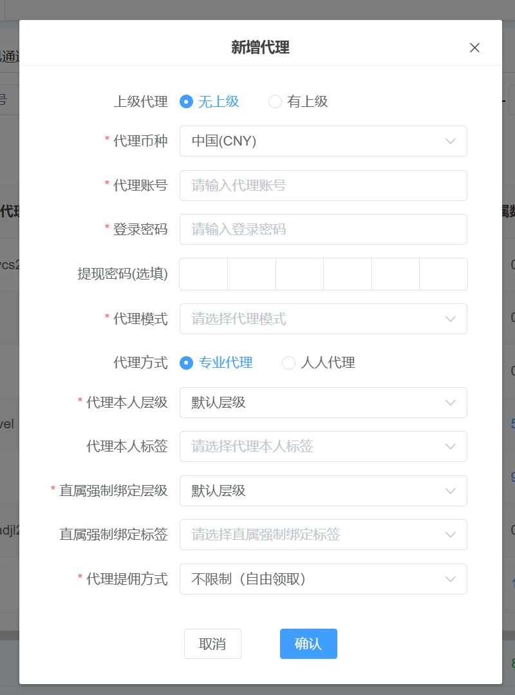
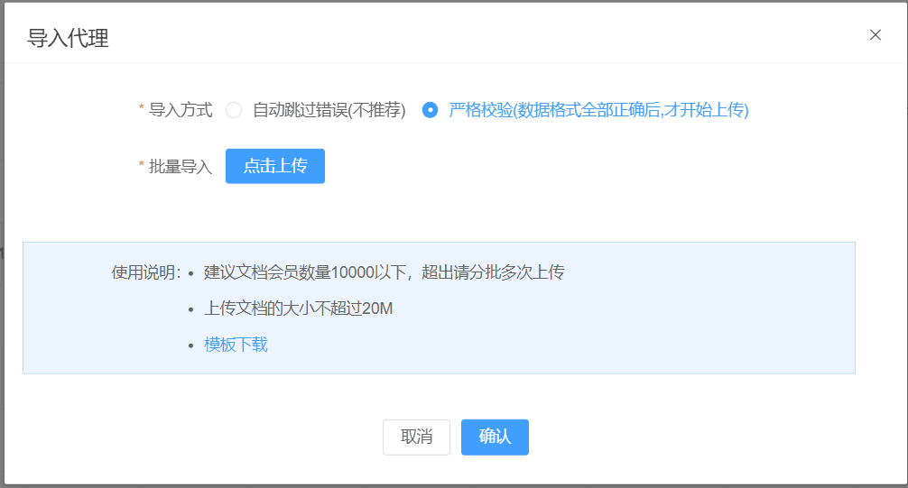
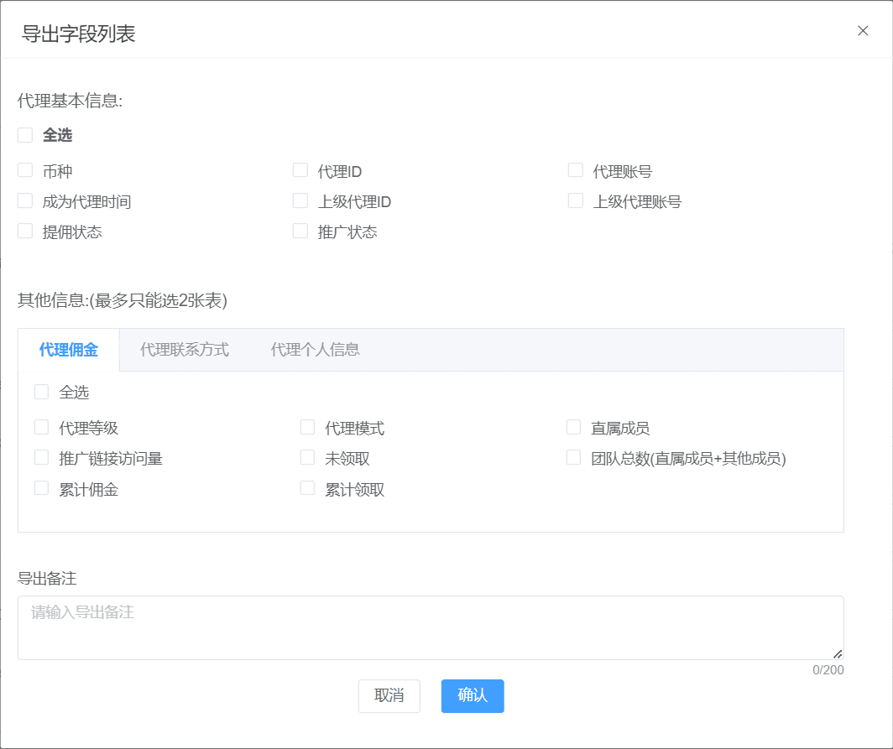
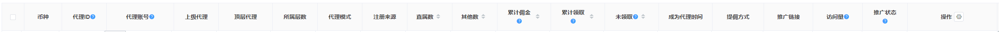
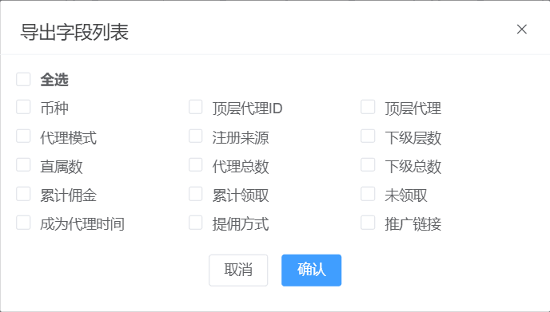
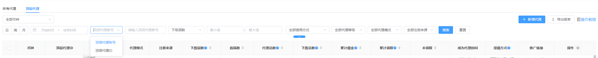

1、所有代理
1.1 新增代理
即可以新增顶层代理和非顶层代理。
如下图所示：

新增代理字段说明
上级代理-无上级：即顶层代理
上级代理-有上级：即非顶层代理
上级代理账号：即有上级需要输入的上级代理账号，选择做了之后所有的代理模式都跟随上级
币种：该代理使用的币种，有上级时，则不允许选择币种，跟随上级代理的币种
代理账号：输入代理账号
登录密码：设置登录密码
提现密码：调整为选填，密码为数字，输入框调整。
代理模式：即顶层代理可以选择代理代理，非顶层代理则跟随上级的代理模式
代理本人层级：设置代理的会员层级
代理本人标签：设置代理的会员标签
直属强制绑定层级：可以强制设置下级的层级。
直属强制绑定标签：即代理的直属下级绑定的会员标签，非必填
代理方式：仅在共存和专业代理时候展示；
上级代理，默认为无上级，在选择有上级时，填写的上级代理账号必须和代理模式一致，才能绑定成功。否则无法绑定上级
代理提佣方式：可以选择代理提佣方式
1.2 导入代理
导出代理功能可以批量导入代理。
如下图所示：

1.3 导出报表
导出报表的功能是通过搜索查询出来的所有的数据，根据勾选的字段来进行选择需要导出的内容。
如下图所示：

1.4 字段说明：
币种：代理使用的币种
代理ID：点击ID可以查看下级代理
代理账号：点击代理账号，可以查看账号信息
上级代理：该账号的上级代理
顶级代理：该账号的顶级代理
所属层数：该代理的所在层数
代理模式：该账号当前的代理模式：一级净盈利、无限极差等
注册来源：该账号的注册来源比如后台添加
直属数：点击跳转到所有会员页面，查询该代理的直属会员信息，数值为该代理的所有直属会员数量
其他数：代理的其他下级
累计佣金：该账号生命周期内的累计总计
累计领取：该账号生命周期内的累计总计
未领取：成为代理后未领取的佣金总额
成为代理时间：成为代理时间
提佣方式：默认为开启状态，关闭之后代理无法进行提佣，但是佣金会正常计算
推广链接：该账号推广的链接
访问量：7天之内的访问量
推广状态：关闭推广链接之后，推广链接可以访问，但是注册的会员不在属于该代理，属于通过官网注册。
操作-修改代理模式：可以修改代理模式，分别为：无限极差，一级代理，一级净盈利，三级净盈利，全民代理
日期：查询范围为最近三个月
自定义列：在操作旁边的ICON，可以进行选择显示该列的内容。默认显示，重置是显示全部。
如下图所示：

2.1导出报表
导出报表的功能是通过搜索查询出来的所有的数据，根据勾选的字段来进行选择需要导出的内容。
如下图所示：

2.2 搜索说明：
默认搜索顶层代理ID，可以通过组合和单一条件来进行查询对应的代理条件。其中顶层代理ID不支持模糊查询
如下图所示：

2.3 字段说明：
币种：代理使用的币种
顶层代理ID：顶层代理的ID
顶层代理：点击顶层代理，可以查询该顶层代理的个人详情
代理模式：该账号当前的代理模式：一级净盈利、无限极差等
注册来源：该账号的注册来源比如后台添加
下级层数：该代理的所在层数
直属数：该账号的直属代理数
代理总数：该代理所有下级代理数量
下级总数：该代理所有下级的会员数量
累计佣金：该账号生命周期内的累计总计
累计领取：该账号生命周期内的累计总计
未领取：该账号当前未领取的佣金
提佣方式：默认为开启状态，关闭之后代理无法进行提佣，但是佣金会正常计算
操作-修改代理模式：可以修改代理模式，分别为：无限极差，一级代理，一级净盈利，三级净盈利，全民代理
日期：查询范围为最近三个月
自定义列：在操作旁边的ICON，可以进行选择显示该列的内容。默认显示，重置是显示全部。
3、专业代理待审核
该模块为代理方式-专业代理、人人和专业代理共存中 审核普通会员申请成为专业代理的记录。
普通会员（没有上级代理的普通会员账号）可以通过客户端-我的-申请代理中进行申请，申请完成之后即可展示在模块。
押金：即普通会员申请的押金，押金通过代理设置-其他公共设置中进行配置。
特别说明：当会员申请被拒绝之后，会员仍然可以再次申请。
4、专业代理被拒绝
该模块为专业代理审核拒绝的记录。
5、专业代理已通过
该模块为专业代理审核通过的记录。